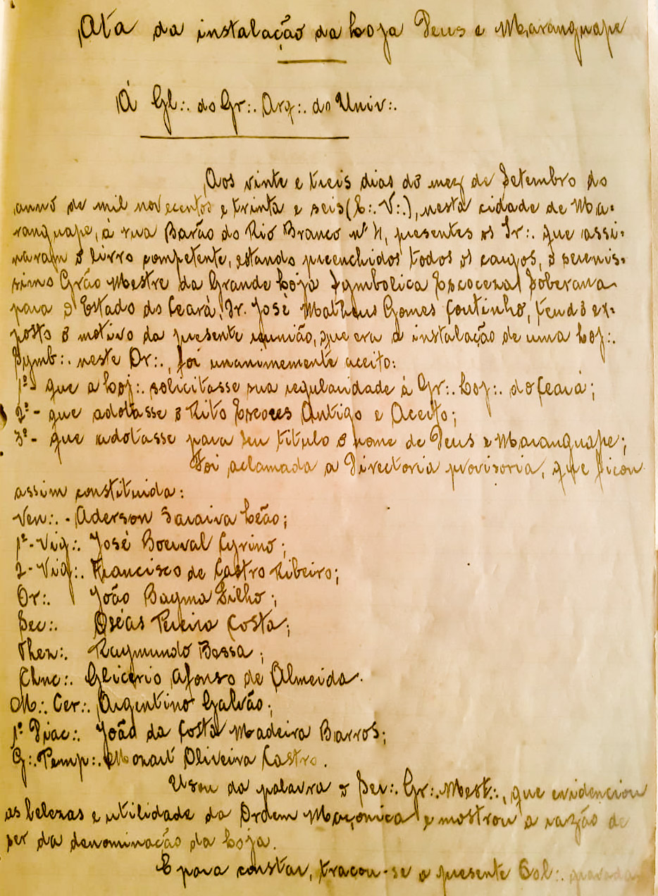

Fundação À G∴D∴G∴A∴D∴U∴ Na página da história da A∴R∴L∴S∴ Deus e Maranguape Nº 15 temos a transcrição de atas de fundação e regularização, um descritivo resumido de datas e acontecimentos e tudo isso foi feito por grandes nomes da Maçonaria cearense. Homens que estavam dispostos a semear e cultivar os ideais maçônicos em todos os lugares, de forma a abolir fronteiras.  É impossível discorrer sobre a biografia de todos eles. Não neste espaço. Muitos deles, certamente figuram em galerias ilustres em suas lojas-mãe e outros serão, aos poucos, alçados a lugares mais luminosos na história. Essa é justamente a nossa proposta: trazer à luz os nomes importantes à história de nossa loja. A imagem da ata de fundação de nossa loja, que se apresenta nesta página, é retrato de uma época de quase um século atrás. A grafia, o desenho caligráfico, termos históricos, formas de tratamento... Tudo remete à aurora da Mui Resp∴ Gr∴ Loj∴ Maç∴ do Estado do Ceará. E ali figuram alguns nomes desta história. Mas aqui, utilizaremos este espaço para resgatar os registros dos nomes de todos que estiveram presentes naquele 23 de setembro de 1936. Lista dos IIr∴ presentes na sessão de fundação Nome Condição Loja Mãe Or∴ José Matheus Gomes Coutinho Grão Mestre Grande Loja Fortaleza Aderson Saraiva Leão Fundador Fortaleza Fortaleza Argentino Galvão Fundador Loja de Emergência - Francisco de Castro Ribeiro Fundador Loja de Emergência - Glicério Afonso de Almeida Fundador Loja de Emergência - João de Castro Madeira Barros Fundador Loja de Emergência - José Boerval Cirino Fundador Loja de Emergência - Mozart de Oliveira Castro Fundador Loja de Emergência - Oséas Pereira Costa Fundador Loja de Emergência - Raymundo Bessa Fundador Loja de Emergência - Adolpho Ribeiro Pinto Bandeira Fundador Loja de Emergência - Antenor F. Wanderley Fundador Loja de Emergência - Antônio Maia de Oliveira Fundador Loja de Emergência - Austthegesilon Fundador Loja de Emergência - Francisco Maia Fundador Loja de Emergência - Heitor Cavalcante de Araújo Fundador Loja de Emergência - João Victorino da Silva Fundador Loja de Emergência - José Bartês Fundador Loja de Emergência - José Correia de Vasconcelos Fundador Loja de Emergência - José Teles Leitão Fundador Loja de Emergência - Lourival Pinto Bandeira Fundador Loja de Emergência - Nestor Peixoto Fundador Loja de Emergência - Palmiro Câmara Fundador Loja de Emergência - Saulo Menezes Pereira Fundador Loja de Emergência - Theodolpho Ribeiro Pinto Bandeira Fundador Loja de Emergência - Wilson Moreira Lima Fundador Loja de Emergência - Bolivar Ribeiro Pinto Bandeira Instalador Nova Cruzada do NOrte Fortaleza Estolano Polari Maia Instalador - - Eurico de Holanda Lima Instalador - - Henrique Ellery Instalador Grande Loja Fortaleza Manoel Soares Lopes Instalador Liberdade V Fortaleza Oswald Moreira de Lima Instalador - - Torquato Porto Instalador Deus e Fraternidade Fortaleza Vicente Carvalho de Brito Instalador Porangaba Fortaleza Alfredo Menezes Pinto Presente na Fundação Deus e Fraternidade Fortaleza Álvaro Dias Medeiros Presente na fundação Nova Cruzada do Norte Fortaleza Ângelo Presente na fundação Deus e Camocim Camocim Antônio Damião Presente na fundação Liberdade V Fortaleza Antônio Ferreira de Lima Presente na fundação Nova Cruzada do Norte Fortaleza Antônio Zabulon Filho Presente na fundação Fortaleza Fortaleza Adamastor Oliveira Presente na fundação - - Augusto Alves dos Santos Presente na fundação Liberdade V Fortaleza Arquides de Carvalho Presente na fundação Porangaba Fortaleza Cândido Silveira Presente na fundação - - Diógenes Júnior (Raimundo) Presente na fundação Fortaleza Fortaleza Egídio Oliveira Presente na fundação - - Ermínio Lima Presente na fundação Liberdade V Fortaleza Euclides de Vasconcelos César Presente na fundação Deus e Fraternidade Fortaleza Demósthenes Gadelha Presenta na fundação Porangaba Fortaleza Francisco Celino Presente na fundação Deus e Universo Quixadá Francisco Tavares Presente na fundação Deus e Fraternidade Fortaleza D. Grunoldt Gonzalez Presente na fundação Perseverança 13 Venezuela Guilher B. V. Santos Presente na fundação Deus e Fraternidade Fortaleza Humberto de Aquino Presente na fundação Porangaba Fortaleza Humberto Garcia Nogueira Presente na fundação Fortaleza Fortaleza Humberto Teixeira Pinheiro Presente na fundação Deus e Fraternidade Fortaleza J. Araujo Gondim Presente na fundação Nova Cruzada do Norte Fortaleza Jaime Alberto da Silva Presente na fundação Liberdade V Fortaleza Jaime Gomes Neves Presente na fundação - - João Bayma Filho Presente na fundação - - João Carlos Pessoa Presente na fundação - - João L. Monterrey Presente na fundação Deus e Fraternidade Fortaleza João Pereira dos Santos Presente na fundação Fortaleza Fortaleza José Álvaro da Costa Presente na fundação Liberdade V Fortaleza José Barbosa Júnior Presente na fundação Nova Cruzada do Norte Fortaleza José Fernandes Moura Presente na fundação Deus e Fraternidade Fortaleza José Francisco Lima Presente na fundação Fortaleza Fortaleza José Peixoto de Medeiros Presente na fundação Liberdade V Fortaleza Luis Gonzaga da Silva Presente na fundação Deus e Fraternidade Fortaleza Manoel Fontenelle Pacheco Presente na fundação Liberddae V Fortaleza Manoel Meira Presente na fundação Porangaba Fortaleza Moyses Santiago Pimentel Presente na fundação Liberdade V Fortaleza Newton R. Machado Presente na fundação Fortaleza Fortaleza Pedro Bandeira Campos Presente na fundação Deus e Fraternidade Fortaleza Pedro Onofre da Silva Presente na fundação Deus e Liberdade Iguatu Rodolpho Ribas Presente na fundação Deus e Fraternindade Fortaleza Rogério Barbosa Presente na fundação Fortaleza Fortaleza Theófilo Elias Presente na fundação Nova Cruzada do Norte Fortaleza Theodorico da Costa Barroso Presente na fundação Fortaleza Fortaleza Waldrifo da Costa Barroso Presente na fundação Fortaleza Fortaleza